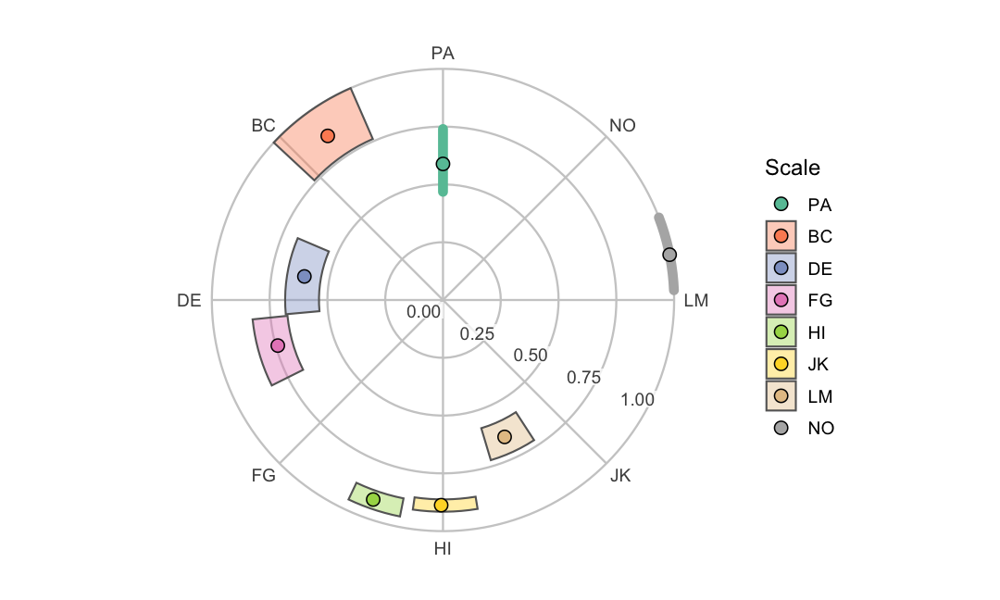
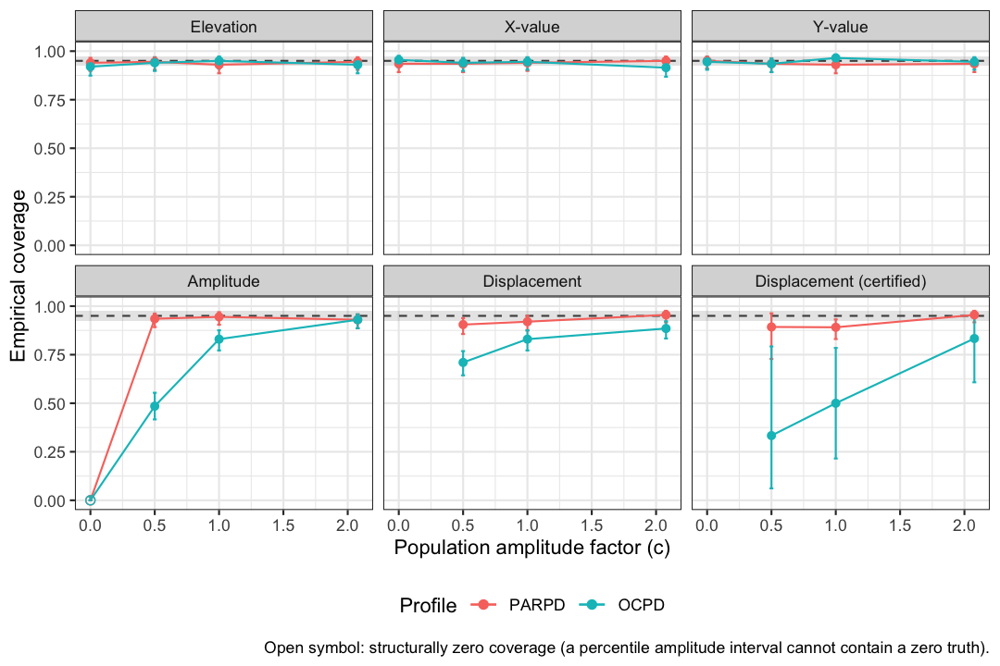

Evaluating Circumplex Structure
Source:vignettes/evaluating-circumplex-structure.Rmd
evaluating-circumplex-structure.Rmd1. Two questions to ask before interpreting an SSM analysis
The Structural Summary Method (SSM) condenses a circumplex profile
into a few interpretable parameters: elevation, amplitude, displacement,
and fit. vignette("introduction-to-ssm-analysis") defines
each of them. That condensation rests on two assumptions. Both are
testable, but they are often left untested:
Does the instrument actually have circumplex structure? The SSM locates a profile on a circle, at positions given by the scales’ theoretical angles. If the scales do not really form a circumplex, the summary is distorted before any profile is computed. The same holds if they sit at very different angles than the theory says.
Are the confidence intervals trustworthy at your sample size and profile? Zimmermann and Wright (2017) showed that the accuracy of bootstrap SSM intervals depends on the sample size and the instrument’s correlation structure. For amplitude and displacement, it also depends on how differentiated the profile really is in the population. Intervals that are accurate for one construct in your table can be inaccurate for the construct printed directly below it.
This vignette shows how to answer both questions.
cpm_fit() and fit_structure() answer question
1, and ssm_ci_accuracy() answers question 2. The examples
use the jz2017 dataset. It holds the same sample of 1,166
undergraduates that Zimmermann and Wright (2017, Study 5) analyzed. It
has octant scores on the IIP-SC, and personality disorder (PD) scale
scores from the PDQ-4+.
2. Does the instrument fit a circumplex?
Fitting the circular process model
cpm_fit() estimates Browne’s (1992) circular process
model (CPM), the confirmatory model behind the CIRCUM and CircE
programs. Each scale gets an estimated angle on the circle and a
communality index
.
The communality index is the correlation between the scale and the
common circumplex “factor”. Its square,
,
is the scale’s communality, the share of its variance that the
circumplex explains. The model also yields the usual
covariance-structure fit indices.
cpm_fit() accepts raw data or a correlation matrix. On
the raw-data path, the default confidence intervals are bootstrapped. We
lower boots from its default of 2000 to keep this vignette
quick to build. In practice, use the default.
data("jz2017")
set.seed(12345)
cpm <- cpm_fit(jz2017, scales = PANO(), angles = octants(), boots = 500)
#> Warning: CPM Hessian is ill-conditioned (condition number 1.83e+14): angles may
#> be clustered or parameters weakly determined.
#> Warning: 11 of 500 bootstrap resamples were excluded (0 with a degenerate or
#> non-positive-definite correlation matrix, 11 failing the convergence acceptance
#> criterion); the confidence intervals are based on the remaining 489 replicates
#> and are conditional on estimability.
summary(cpm)
#>
#> Circular Process Model (Browne, 1992)
#> Model: quasi-circumplex
#> Harmonics (m): 3
#> Sample size (N): 1166
#> Reference scale: PA
#> CI method: bootstrap
#> Confidence level: 0.95
#>
#> # Estimated angles and communality indices
#>
#> Scale Angle_theory Angle Angle_lci Angle_uci Zeta Zeta_lci Zeta_uci
#> PA 90 90.000 90.000 90.000 0.767 0.684 0.860
#> BC 135 125.074 113.548 137.069 0.931 0.872 1.000
#> DE 180 170.353 156.943 185.174 0.780 0.733 0.826
#> FG 225 195.425 185.811 206.523 0.861 0.822 0.910
#> HI 270 250.721 244.660 258.758 0.956 0.935 0.977
#> JK 315 269.491 261.813 279.412 0.942 0.929 0.957
#> LM 360 294.230 286.626 303.019 0.806 0.761 0.850
#> NO 45 11.305 2.426 20.913 1.000 1.000 1.000
#> Communality
#> 0.589
#> 0.868
#> 0.608
#> 0.741
#> 0.914
#> 0.888
#> 0.650
#> 1.000
#>
#> # Correlation-function weights
#>
#> k Beta Beta_lci Beta_uci
#> 0 0.450 0.418 0.481
#> 1 0.440 0.411 0.466
#> 2 0.074 0.065 0.087
#> 3 0.036 0.015 0.057
#>
#> # Fit indices
#>
#> χ²(10) = 81.169, p = <1e-04
#> RMSEA = 0.078 [0.063, 0.094] (90% CI)
#> SRMR = 0.042
#> CFI = 0.984 TLI = 0.956
#> AIC = 117.169 BIC = 208.273
#>
#> # Residuals
#>
#> Largest absolute residual: 0.134 (PA – HI)
#>
#> # Diagnostics
#>
#> Note: a communality index reached its upper boundary (ζ > 0.995, a Heywood-type solution).
#> Note: 11 of 500 bootstrap resamples were excluded (0 degenerate, 11 non-convergent); the intervals are based on 489 replicates and are conditional on estimability.
#>
#> Note: boundary/weak-identification markers fired: Heywood communality;
#> small correlation-function weight; ill-conditioned Hessian.
#> What has been measured about these markers covers analytic intervals
#> only, and not every marker was measured; they are not validated as
#> predictors of the bootstrap intervals shown here (see the vignette
#> section 'When a fit sits at a boundary').Two parts of this output matter most for evaluating structure:
- The estimated angles. Compare them with the theoretical angles, but read the comparison carefully. One scale is held fixed to identify the configuration (PA here, at 90°). So every other scale’s departure is measured from that anchor, and a different anchor would redistribute the departures. Two things are worth separating. The ordering around the circle is preserved: the estimated angles run through the octants in the same cyclic order that the instrument assigns them. The spacing is not preserved. The gaps between circularly adjacent estimates run from under 20° to nearly 80°, against a theoretical 45°. The largest departure from a theoretical position is about 66°. Departures from perfect structure are common in well-validated circumplex instruments (Gurtman & Pincus, 2000). The model comparison below quantifies what this pattern costs: it is why forcing equal spacing fits these data poorly.
- The communality indices. Scales with low are poorly described by the circle. A profile peak at such a scale’s angle means less than the same peak at the angle of a well-explained scale.
The estimated configuration is easiest to read on the circle itself. The plot draws each scale at its estimated angle, at a radius equal to its communality (). It adds a joint confidence region where one is estimable.
plot(cpm)
Reading the fit indices
The summary() output reports the standard indices, and
the standard benchmarks apply:
- RMSEA at or below about .08 suggests adequate approximate fit, and above about .10 suggests poor fit (Browne & Cudeck, 1993).
- SRMR at or below about .08 suggests acceptable average residuals (Hu & Bentler, 1999).
- CFI and TLI near .95 or above suggest good comparative fit (Hu & Bentler, 1999).
Treat these as conventions from the broader covariance-structure literature, not circumplex-specific laws.
Two caveats come from the benchmark sources themselves. First, Browne and Cudeck call their own RMSEA thresholds “based on subjective judgment.” They caution that such a figure “cannot be regarded as infallible or correct” (Browne & Cudeck, 1993). So read the cutoffs as conventions, not decision rules. Second, these benchmarks are least dependable at small samples. Hu and Bentler (1999) found that the ML-based TLI and RMSEA tend to overreject true-population models when the sample is small. (CFI is not among the indices they flag.) Circumplex analyses are often run at modest sample sizes. The SSM accuracy thresholds in Section 3 span roughly to . At small , a TLI or RMSEA that falls short of its benchmark can reflect the index’s small-sample behavior as much as the model’s fit.
Two further cautions are circumplex-specific, and both come from this package’s own validation simulations:
- Boundary solutions are common at realistic sample sizes, including in the fit above. The next subsection, When a fit sits at a boundary, says what that means and what to do about it.
- Do not lean hard on the chi-square p value. In simulations at field-typical sample sizes with octant-like population structures, the test statistic did not follow its nominal chi-square reference distribution. This held even for correctly specified models. Read the chi-square descriptively (bigger is worse), and prefer RMSEA/SRMR/CFI for judging approximate fit.
For the same reasons, summary() prints a caution for
analytic (Wald) intervals below
.
When a boundary marker (defined in the next subsection) is present, the
analytic caution prints up to very large
.
In validation, analytic intervals mis-covered in exactly those regimes.
Analytic intervals are the only option on the correlation-matrix input
path. Prefer the bootstrap (the raw-data default) when you have raw
data.
When a fit sits at a boundary
The fit above is one of these fits, and it says so. Its
# Diagnostics block prints a note that a communality index
reached its upper boundary. The results table shows which one: the NO
scale’s communality index is 1.000, with a confidence interval of
[1.000, 1.000]. A zero-width interval is not a precise estimate. It is
an absent one. Both endpoints equal the estimate. So at least the middle
95% of the retained bootstrap resamples also sat on the boundary. That
left the percentile interval no width to report. The same chunk also
emits a warning that the fit’s Hessian is ill-conditioned, a second
signal from the same regime. When octant scales share a strong general
factor, as interpersonal problem scales do, fitted solutions frequently
sit at or near a parameter boundary. This is the estimator meeting real
data at finite
,
not a data-entry error.
cpm_fit() records five such markers, and
summary() names the ones that fired:
- Heywood communality: a communality index estimated at its upper boundary (). The circle accounts for that scale essentially completely.
- boundary harmonic removed: a correlation-function weight sat at zero and was dropped from the model, with the degrees of freedom adjusted.
- small correlation-function weight: the smallest weight is below 0.10, near enough to zero to matter for inference.
- ill-conditioned Hessian: the curvature matrix that the analytic standard errors are computed from is close to singular. Angles may be clustered or parameters weakly determined.
- competing near-tied optima: the search found more than one solution of nearly equal fit, so the reported one may not be uniquely determined.
summary() prints that list when markers fire, but on the
analytic path it prints the list only within a sample-size window. On
the bootstrap path, as in the fit displayed above, the list prints as a
descriptive note at every sample size. Beside the note, a statement says
that what has been measured about the markers covers analytic intervals
only. It also says that not every marker was measured. What a fired
marker does and does not tell you, below, has the particulars. So
the markers are not validated as predictors of the bootstrap intervals
they accompany. When the intervals are analytic, the list instead
arrives inside a coverage caution, printed when
falls between 2000 and 50000. Below 2000, an unconditional caution
prints without the list. Above 50000, neither prints. To see that
caution-embedded form, we simulate a larger sample from the structure
just estimated with cpm_simulate(). Then we refit it on the
correlation-matrix path, where the intervals are analytic.
set.seed(2026)
sim <- cpm_simulate(cpm, n = 2500) # draws from the structure estimated above
demo <- cpm_fit(
cormat = cor(sim), scales = colnames(sim), angles = octants(), n = 2500
)
summary(demo)
#>
#> Circular Process Model (Browne, 1992)
#> Model: quasi-circumplex
#> Harmonics (m): 3
#> Sample size (N): 2500
#> Reference scale: PA
#> CI method: analytic
#> Confidence level: 0.95
#>
#> # Estimated angles and communality indices
#>
#> Scale Angle_theory Angle Angle_lci Angle_uci Zeta Zeta_lci Zeta_uci
#> PA 90 90.000 90.000 90.000 0.785 0.748 0.823
#> BC 135 125.057 120.571 129.542 0.881 0.852 0.911
#> DE 180 167.802 161.988 173.616 0.799 0.777 0.820
#> FG 225 193.344 187.711 198.976 0.878 0.854 0.901
#> HI 270 250.958 245.112 256.805 0.958 0.944 0.971
#> JK 315 269.528 263.351 275.706 0.948 0.938 0.958
#> LM 360 293.619 286.622 300.617 0.803 0.778 0.829
#> NO 45 12.673 7.017 18.329 0.929 0.836 1.023
#> Communality
#> 0.617
#> 0.777
#> 0.638
#> 0.770
#> 0.917
#> 0.899
#> 0.645
#> 0.863
#>
#> # Correlation-function weights
#>
#> k Beta Beta_lci Beta_uci
#> 0 0.442 0.422 0.462
#> 1 0.453 0.436 0.470
#> 2 0.068 0.058 0.078
#> 3 0.037 0.030 0.044
#>
#> # Fit indices
#>
#> χ²(10) = 2.229, p = 0.994
#> RMSEA = 0 [0, 0] (90% CI)
#> SRMR = 0.005
#> CFI = 1 TLI = 1.002
#> AIC = 38.229 BIC = 143.062
#>
#> # Residuals
#>
#> Largest absolute residual: 0.012 (FG – NO)
#>
#> Note: this solution is near a parameter boundary or weakly identified
#> (small correlation-function weight);
#> analytic (Wald) confidence intervals mis-covered for such fits in validation
#> even at N in the tens of thousands. Interpret them with caution and prefer
#> the bootstrap on the raw-data path when available.One marker fires here, a small correlation-function
weight, and summary() names it. Notice what did
not happen. The population that this sample was drawn from
carries NO’s communality at the boundary, yet this draw produced no
Heywood case. A boundary in the population does not guarantee a boundary
in every sample from it. In the same way, a quiet fit does not guarantee
that there is no boundary behind the data.
What a fired marker does and does not tell you. The package’s validation simulations measured what these markers predict, and the measurement is narrower than the markers are. It covered analytic (Wald) intervals fitted from a correlation matrix. It measured interval coverage (how often an interval contained the truth), not bias in the point estimates.
- Communality indices take the worst of it when an ill-conditioning, a Heywood, or a near-tied-optima marker fires. All three covered well below nominal, and ill-conditioning was the worst of them. Two failure modes show up in the output rather than hiding in it. First, the analytic standard errors can come back missing. This happens for the communality indices, the angles and the weights at the same time. The reason is that one singular curvature matrix takes all three families down together. Second, an interval can collapse to zero width, because a negative asymptotic variance was clamped at zero. NO’s zero-width interval above arrives by a third route: it is a percentile interval whose resamples sat on the boundary. But it reaches the reader the same way, as an interval with no usable width.
- Angles. Taking all marker-firing fits together, angle intervals actually degraded somewhat more than communality intervals did. So the ranking above (communality indices worst under those three markers) belongs to those markers, not to the parameter families in general. The strongest single angle signal was the ill-conditioning marker. The small-weight marker was next, and the Heywood marker was the weakest of the three.
- Correlation-function weights moved least. Marker-firing fits covered only slightly less often than quiet ones, so a fired marker tells you least here. The real problem is a different one, and it does not depend on any marker. In the package’s bootstrap validation, percentile intervals for a weight whose population value sits near zero under-covered at every sample size studied. The shortfall did not shrink as grew. That is a property of percentile intervals at a boundary, not a small-sample artifact. It is about where the truth sits, not about what the fit flagged.
The record does not support four things, and no reading of these markers should assume them. First, nothing was measured about bias in the point estimates. Second, the marker study fitted analytic intervals only. So the markers are not validated as predictors on the bootstrap path that this vignette uses by default. Third, the boundary harmonic removed marker showed no evidence of predicting mis-coverage at all. Fits carrying it covered as well as fits without it. It is kept because it names a real feature of the solution, not because it forecasts trouble. Fourth, the numbers behind Heywood communality, ill-conditioned Hessian and competing near-tied optima come almost entirely from one simulated configuration, chosen deliberately to provoke them. In that configuration, those markers fire often enough to measure. Even there, near-tied optima fired only rarely. Read them as what happens where those markers fire, not as how often they fire.
What to do when one fires.
- Locate it. Read the results table beside the note, and find the scale or weight sitting at the boundary, as NO is above. A marker with no identified owner is not yet a diagnosis.
-
Re-fit to find out what the boundary is about. The default
"quasi-circumplex"model is the least constrained of the variants in the next subsection. So a boundary that appears only under a constrained variant was put there by the constraint. A boundary already present in the default fit belongs to the data and the model family, not to an assumption you added. If you fitted from a correlation matrix, refitting from raw data also buys you bootstrap intervals in place of analytic ones. - Report it. Quote the marker alongside the estimate it belongs to: which scales sat at the boundary, and that their intervals are degenerate or missing. An angle or communality reported without its diagnostic note is a number stripped of its own caveat.
-
Keep using what still holds. Three things remain usable.
The first is the point estimates, as the solution the model actually
fitted. Their bias in this regime is unmeasured, so read them as
estimates, not to the digit. The second is the fit indices and the
residual summary. A boundary changes how the intervals around
them behave. It does not change how the fit indices and the residual
summary are computed. Read them with the caution given earlier in this
section, which is about field sample sizes, not about markers. The third
is parameter intervals that came back with ordinary width. Read them
knowing that marked fits covered less well than unmarked ones across all
three families. One thing does not remain usable: a parameter interval
that is missing or zero-width. (The demonstration fit above prints
RMSEA = 0 [0, 0], which is not that failure. It is a fit statistic at its own floor, because the refit recovers almost exactly the structure it was simulated from.)
Comparing model variants
Constrained variants make the structural question sharp. Is the instrument consistent with equally spaced scales? Is it consistent with equal communalities? The correlation-matrix path is convenient for this comparison, because its point estimates and fit indices are deterministic. So no bootstrap is needed:
R <- cpm$matrices$R # the sample correlation matrix stored by cpm_fit()
fit_quasi <- cpm_fit(
cormat = R, scales = PANO(), angles = octants(),
n = nrow(jz2017), model = "quasi-circumplex"
)
#> Warning: CPM Hessian is ill-conditioned (condition number 1.83e+14): angles may
#> be clustered or parameters weakly determined.
fit_equal <- cpm_fit(
cormat = R, scales = PANO(), angles = octants(),
n = nrow(jz2017), model = "equal-communality"
)
fit_circulant <- cpm_fit(
cormat = R, scales = PANO(), angles = octants(),
n = nrow(jz2017), model = "circulant"
)The table below has one row for each of the three fits. It shows the
model name from $details$model, and the degrees of freedom
and four fit indices from $fit. The indices are rounded to
three decimals. (The code that builds the table is omitted.)
#> model df rmsea srmr cfi tli
#> 1 quasi-circumplex 10 0.078 0.042 0.984 0.956
#> 2 equal-communality 17 0.100 0.063 0.956 0.928
#> 3 circulant 24 0.185 0.130 0.790 0.755The pattern reproduces what Zimmermann and Wright (2017, p. 14)
reported for these data with CircE. The fully constrained model (equal
spacing and equal communality, the "circulant"
variant) fits poorly. Relaxing the equal-spacing constraint improves fit
to the edge of the conventional benchmarks: marginal by RMSEA, and
acceptable by SRMR and CFI. They reported CFI = .824, TLI = .795 and
RMSEA = .169 for the fully constrained model. For the model with the
equal-spacing constraint relaxed, they reported CFI = .958, TLI = .931
and RMSEA = .098.
Do not expect the default fit’s indices to match theirs to the digit.
CIRCUM/CircE fit a covariance version of the model with free scaling
constants. By default, cpm_fit() fits the correlation
structure directly, and the two versions differ slightly at finite
sample sizes. Pass scaling = "free" to fit their covariance
parameterization and reproduce published CIRCUM/CircE output
exactly.
For the model test, the scaling choice does not matter here. With correlation input, the two families’ test statistics are calibration-indistinguishable. In paired simulation at sample sizes 250–50,000, they differed by well under 1% of the model degrees of freedom. The free statistic never exceeds the default’s on the same input, beyond numerical tolerance. This is because the free family nests the default and is also started from its solution. The default is recommended for routine inference, because free scaling adds parameters whose analytic standard errors are often undefined at small-to-moderate samples. The conclusion is the same: ordered octants with unequal spacing, and adequate approximate fit once equal spacing is not forced.
A poor CPM fit does not make SSM output uncomputable. It makes the summary less meaningful, because the profile is referred to scale positions that the data contradict. If the ordering itself fails (scales out of sequence around the circle), SSM parameters should not be interpreted.
3. Can you trust your confidence intervals?
What Zimmermann & Wright (2017) found
Zimmermann and Wright’s simulation studies (their Studies 1–4)
evaluated the accuracy of 95% percentile bootstrap intervals for SSM
parameters. This is the same interval type that
ssm_analyze() reports. They judged an interval accurate
when its empirical coverage stayed within Bradley’s (1978) liberal band
of 92.5% to 97.5%. Their headline results:
| Parameter | Point estimate | 95% bootstrap CI accurate when… |
|---|---|---|
| Elevation () | essentially unbiased | |
| X value / affiliation | essentially unbiased | |
| Y value / dominance | essentially unbiased | |
| Amplitude () | biased upward, strongly so when population amplitude is small | (general-factor instrument) or (no general factor), given population amplitude |
| Displacement () | unbiased but imprecise at low amplitude | (general factor) or (no general factor), given population amplitude |
| Fit () | biased downward | population only (unsuited near 1) |
(Transcribed from Zimmermann & Wright, 2017, Studies 1–2, pp. 6–11.)
Three implications are worth internalizing:
- Amplitude overestimates differentiation. Across their conditions, the relative bias averaged 15.5% and reached 135.8%. With and no general factor, the expected sample amplitude was about .15 when the population amplitude was exactly zero (their pp. 6–7). An amplitude of .15 is commonly read as “marked”. At small , it can be pure sampling artifact.
- Displacement is only as stable as amplitude is large. The standard error of the displacement grows as amplitude shrinks. For example, it is roughly 50 degrees at for a weakly differentiated profile (their p. 8). A displacement estimate from a flat profile has no meaningful direction.
- The thresholds above are grid minima, not guarantees. They come from specific instruments, specific sample sizes, and population amplitudes of .10 or larger. Their Study 3 quantified the frontier more finely. The minimum population affiliation/dominance component needed for accurate amplitude and displacement intervals is approximately . Here is an instrument constant (their Eq. 3). is about .55 for the IIP-C, .63 for the IIP-SC and .85 for the IAS. At with an IIP-C-like instrument, that is a population component of about .11. That is larger than many real construct profiles.
Simulating coverage for your own analysis
Published thresholds cover a coarse grid of conditions. Your analysis
(your instrument, your
,
your group sizes, your profile, your number of bootstrap resamples)
usually falls between or outside the grid points.
ssm_ci_accuracy() answers the question directly at your
configuration. It builds a population whose structure matches your
fitted estimates (through the CPM by default). It simulates many
datasets of your exact sample size from that population, and it replays
your own CI procedure on each. Then it reports how often the intervals
covered the known population values.
To see it catch a real problem, we analyze two PD scales at a modest sample size. Paranoid PD has a well-differentiated interpersonal profile. Obsessive–compulsive PD has a profile that Zimmermann and Wright’s Table 4 showed to be nearly flat (amplitude .012 at full sample size). We use the first 250 participants. Many construct-validation studies would consider that sample size respectable.
set.seed(23456)
res <- ssm_analyze(
jz2017[1:250, ],
scales = PANO(),
angles = octants(),
measures = c("PARPD", "OCPD"),
boots = 500 # reduced from the default 2000 to keep the vignette quick;
# the diagnostic below replays whatever procedure this object used
)
summary(res)
#>
#> Statistical Basis: Correlation Scores
#> Bootstrap Resamples: 500
#> Confidence Level: 0.95
#> Listwise Deletion: TRUE
#> Scale Displacements: 90 135 180 225 270 315 360 45
#>
#>
#> # Profile [PARPD]:
#>
#> Estimate Lower CI Upper CI
#> Elevation 0.258 0.169 0.338
#> X-Value -0.095 -0.160 -0.028
#> Y-Value 0.055 -0.017 0.122
#> Amplitude 0.110 0.054 0.185
#> Displacement 149.667 111.480 190.360
#> Model Fit 0.725
#>
#>
#> # Profile [OCPD]:
#>
#> Estimate Lower CI Upper CI
#> Elevation 0.218 0.123 0.302
#> X-Value -0.021 -0.084 0.037
#> Y-Value -0.003 -0.068 0.063
#> Amplitude 0.021 0.009 0.096
#> Displacement 188.695 29.052 335.755
#> Model Fit 0.150
#> Note: model fit is inadequate (R² < .70); interpret only the elevation parameter.
#> Note: the amplitude CI lower bound is under 0.35 CI-widths above zero; the displacement is not interpretable.Note the guardrail in the printed output. When a profile’s amplitude
CI lower bound sits less than 0.35 CI-widths above zero,
ssm_analyze() marks the displacement as uninterpretable,
rather than certifying its direction. That rule is scale-free. It
compares the lower bound to the interval’s own width, so it means the
same thing on any score metric. It also does not depend on the display
precision. The diagnostic below measures, among other things, how well
that certification rule performs at your configuration.
We again use reduced settings to keep the vignette fast:
reps = 200, a short amplitude ladder, and the smaller
boots above. The ladder is a set of scaling factors applied
to the estimated amplitude (1 = as estimated), explained below. The
defaults are reps = 1000 and four ladder rungs, on an
object built with the default boots = 2000. They give a
Monte Carlo standard error under one percentage point for coverage near
the nominal level, and they are recommended in practice. The
parallel/ncpus arguments speed up real runs
without changing results for a given seed.
set.seed(34567)
acc <- ssm_ci_accuracy(res, reps = 200, amplitude_factors = c(1, 0.5, 0))
#> Warning: CPM Hessian is ill-conditioned (condition number 9.24e+16): angles may
#> be clustered or parameters weakly determined.
summary(acc)
#>
#> Correlation scores; bootstrap, 500 replicates, level 0.95; 200 reps per
#> condition.
#> Population: Browne circular model (CPM); groups All = 250; elapsed 4.7s.
#> Ladder c = 1, 0.5, 0, 2.077; certified if a_lci / (a_uci - a_lci) >= 0.35.
#>
#> Structure note: population simulated from a Browne circular model fit (m = 3,
#> RMSEA = 0.064, SRMR = 0.038).
#> The structure fits adequately (RMSEA <= 0.08, Browne & Cudeck, 1993; SRMR
#> <= 0.08, Hu & Bentler, 1999), so the simulated population is a reasonable
#> stand-in for yours.
#> Boundary markers: Heywood communality; small correlation-function weight;
#> ill-conditioned Hessian.
#> Near-zero regime: the amplitude estimate of profile [OCPD] is below half its
#> own CI width, so your analysis already sits in the amplitude-near-zero
#> regime; an absolute rung at the certification margin (c = 2.08, population
#> amplitude = the observed CI half-width) was added to the ladder.
#>
#> Verdicts at c = 1 (as estimated), Bradley (1978) liberal band, 95% Wilson CIs:
#>
#> # Profile [PARPD] (n = 250; 95% bootstrap CIs, 500 replicates):
#> Elevation coverage 93.0%: borderline
#> Amplitude coverage 94.5%: borderline
#> Displacement coverage 89.1% when certified: borderline
#> Guardrail under a truly zero amplitude, displacement would be
#> certified 1.0% of the time (user-expectation benchmark
#> 2.5%)
#> Verdict: BORDERLINE. Elevation, amplitude, and certified displacement
#> coverage rates are borderline at this number of replications; a larger
#> `reps` would sharpen the verdict.
#>
#> # Profile [OCPD] (n = 250; 95% bootstrap CIs, 500 replicates):
#> Elevation coverage 95.0%: borderline
#> Amplitude coverage 83.0%: INADEQUATE (under-coverage; misses are
#> almost all below the interval: the amplitude CI tends to
#> sit above the truth)
#> Displacement coverage 50.0% when certified: INADEQUATE (under-coverage)
#> Guardrail under a truly zero amplitude, displacement would be
#> certified 1.0% of the time (user-expectation benchmark
#> 2.5%)
#> Verdict: CAUTION. Amplitude CIs are less reliable than nominal at this
#> sample size and displacement CIs mis-cover even when certified. Elevation
#> coverage is borderline at this number of replications; a larger `reps`
#> would sharpen the verdict. Consider a larger sample or treat near-zero
#> amplitudes as inconclusive rather than absent.
#>
#> Coverage by condition (d_cert: d when certified; cert: certification rate):
#> Profile Condition e x y a d d_cert cert Structural
#> PARPD 1.000 0.930 0.940 0.930 0.945 0.920 0.891 0.735 FALSE
#> PARPD 0.500 0.945 0.935 0.935 0.935 0.905 0.893 0.140 FALSE
#> PARPD 0.000 0.940 0.935 0.950 0.000 NA NA 0.010 TRUE
#> PARPD 2.077 0.945 0.950 0.935 0.930 0.955 0.955 1.000 FALSE
#> OCPD 1.000 0.950 0.945 0.965 0.830 0.830 0.500 0.040 FALSE
#> OCPD 0.500 0.940 0.940 0.935 0.485 0.710 0.333 0.015 FALSE
#> OCPD 0.000 0.920 0.955 0.945 0.000 NA NA 0.010 TRUE
#> OCPD 2.077 0.930 0.915 0.945 0.930 0.885 0.833 0.090 FALSE
#> Note: amplitude coverage on rows flagged Structural is structurally 0 (a
#> percentile interval of strictly positive amplitude replicates cannot
#> contain a zero truth). This is a theorem, not a measurement; the
#> informative near-zero rungs are the small c > 0 ones.How to read this output:
-
The coverage table reports how often your CI
procedure covered the truth in the simulated replications, for each
parameter. It does so at the amplitude that the profile was estimated to
have (
Condition = 1) and at fractions of it. Compare coverage against the nominal level using the Wilson interval (an interval around the estimated coverage) and the Bradley band. The verdict does this for you. -
The amplitude ladder (
Conditioncolumn) matters because your estimated amplitude is biased upward. The population that generated your data plausibly has less differentiation than your estimate. The rungs below 1 show what happens to coverage in that direction. The 0 rung shows the degenerate flat-profile case. There, displacement has no true value at all, and the amplitude interval cannot cover the boundary truth. (Its printed zero coverage is structural, and the table flags it.) When a profile’s estimated amplitude is smaller than half its own CI width, the diagnostic adds one more rung at a scaling factor above 1. This is the case for obsessive–compulsive PD here. That rung is the amplitude at which the population would sit exactly at the observed CI half-width. - The guardrail table reports how often profiles were certified at each rung. A certified profile has its amplitude CI lower bound at least 0.35 CI-widths above zero. At the 0 rung, any certification is a false certification. The summary prints a caution when the false-certification rate is materially above the rate that a user would expect from the interval level. This is a measured property of the shipped display rule, not a hypothesis test.
- The verdict classifies elevation, amplitude, and certification-conditional displacement coverage at your as-estimated amplitude. The plain-language paragraph states the overall conclusion per profile.
For a visual summary across the ladder:
plot(acc)
The two profiles tell usefully different stories. Paranoid PD is
certified. Its amplitude CI lower bound clears the 0.35-CI-width margin,
so ssm_analyze() reports its displacement. Nothing in its
coverage table clearly leaves the Bradley band, at the as-estimated
amplitude or with the population amplitude halved. Obsessive–compulsive
PD is not certified. Its amplitude (about .02 here) is far too
close to zero relative to its CI width. So the printed output already
withholds its displacement as uninterpretable, before any coverage
question is asked. On top of that, the diagnostic shows that its
amplitude and displacement CIs under-cover badly at this sample size
(missing below the truth). So its verdict is a caution for a genuine
reason. The intervals themselves are unreliable, not merely the point on
the circle.
The guardrail line confirms that the rule is doing its job. At this configuration (, eight octant correlations), a profile whose true amplitude is exactly zero would be certified only at about the benchmark rate. That rate is roughly the one-sided error that a user reading the guardrail would expect. So no caution fires from the guardrail itself. This is the payoff of the scale-free rule. Unlike a fixed amplitude-unit cutoff, it holds false-certification near its intended rate, even in the near-zero regime that Zimmermann and Wright flagged. In that regime, a sample amplitude large enough to look non-zero is otherwise the expected outcome from a flat population.
One reading note: at reduced reps, classes tend to print
as borderline. This is because the Wilson interval around
the estimated coverage is too wide to place it clearly inside or outside
the Bradley band. That is the diagnostic being honest about its own
Monte Carlo error. The default reps = 1000 sharpens such
classifications into adequate or
inadequate.
Two settings are worth knowing. First,
structure = "observed" rebuilds the population from the
pooled observed correlations instead of the CPM. If the two structures
yield different verdicts, that disagreement is itself informative:
structure uncertainty is material for your data. Second, the embedded
CPM fit is returned as acc$cpm, for inspection with the
tools from Section 2.
The diagnostic itself was validated against Zimmermann and Wright’s published results. Configured to their transcribed simulation conditions, it reproduces their accuracy classifications. It gives coverage inside the Bradley band at conditions they found accurate. It gives the same one-sided under-coverage at conditions they found inaccurate.
When to trust SSM parameters
Putting Sections 2 and 3 together into a checklist:
-
Structure first. Fit
cpm_fit()to your instrument in your sample. If the octant ordering fails or communalities are very low, stop, because SSM positions mean little. - Elevation is the robust parameter. It is essentially unbiased, and its intervals were accurate from in every published and package-run condition. (On the correlation path, elevation is also the parameter that ipsatizing destroys. See Section 5.)
-
Treat amplitude as optimistic. It cannot go below
zero, so it overshoots when true differentiation is weak. Before
interpreting a “marked” amplitude at modest
,
run
ssm_ci_accuracy()and look at the sub-1 ladder rungs. - Only interpret displacement when amplitude is credible. The package already withholds the displacement interval when the amplitude CI lower bound sits less than 0.35 CI-widths above zero. The diagnostic tells you how reliable that certification is at your configuration.
- Do not build claims on the fit parameter’s interval. Zimmermann and Wright found bootstrap intervals accurate only when population fit was mediocre. Near-perfect prototypicality cannot be bracketed from below. Report descriptively.
- Remember what the diagnostic conditions on. It asks “would my CI procedure work in a population like my estimates”, under multivariate normality, with complete data. It is a strong check, not a certificate.
4. Does the instrument have circumplex structure at all?
Section 2’s confirmatory model (cpm_fit()) fits one
theory-driven circular model and asks how well it fits. A complementary,
more exploratory question is whether the scales’ correlations show
circumplex structure at all, without committing to the
theoretical angles. Are the scales spread evenly around a circle, with
comparable communalities? Or do they cluster into a small number of
independent clusters (simple structure)? Acton and Revelle (A&R,
2004) evaluated ten such criteria by simulation.
fit_structure() implements four of them: Fisher, Gap, VT2,
and Rotation. It leaves out a variance-test variant that A&R found
ineffective (VT1). It also leaves out MT, a criterion so highly
correlated with the Rotation Test (RT) as to be redundant. In their
Table 1, MT has r = .99 with RT. A fifth test, RANDALL, is not one of
A&R’s ten at all. It is an independent order-correspondence test
(Hubert & Arabie, 1987, and Tracey, 1997). A&R excluded it from
their own simulation because, unlike their criteria, its null
distribution is known analytically rather than needing simulated cutoffs
(their footnote 3).
The five tests
fit_structure() extracts the first two unrotated
principal-axis factors of the scales’ correlation matrix (Acton &
Revelle, 2004, p. 13). It computes four criteria from that two-factor
solution, plus a fifth test that works directly on the correlations:
- Fisher Test (equal axes). Are the scales’ communalities on the two-factor solution comparable, rather than one axis dominating? The statistic is the coefficient of variation of the scales’ vector lengths .
- Gap Test (equal spacing). Are the scales evenly distributed in angle around the circle, rather than bunched together? The statistic is the variance of the angular gaps between angularly adjacent scales. It includes the gap that wraps from the last scale back around to the first.
- Variance Test (VT2) and Rotation Test (interstitiality). Both ask whether the scales sit between a small number of dominant axes rather than on them. That is the signature of a genuine circumplex, as opposed to simple structure. Each takes a criterion computed at many rotations of the two-factor solution, and summarizes it as a coefficient of variation across rotations. A true circumplex is indifferent to rotation, so both criteria stay low.
-
RANDALL (Hubert & Arabie, 1987, and Tracey,
1997). Does the hypothesized circular order that you supplied
(the order of
scales) match the observed correlations? Here a match means that closer-together scales correlate more strongly. Unlike the other four, this is a genuine randomization test. Its null distribution (scales randomly relabeled onto the hypothesized positions) is enumerated exactly for up to nine scales. For more scales, it is estimated by Monte Carlo relabeling. So the test returns an exact or Monte Carlo p value rather than a simulated cutoff.
The four factor-analytic criteria are Fisher, Gap, VT2 and Rotation.
They have the most power to detect simple structure when there is no
large general factor across the scales. Deviation scoring
centers each respondent on their own mean across the selected scales,
which is exactly what ipsatize() does. It approximates
removing that general factor (Acton & Revelle, 2004, p. 9), so it is
fit_structure()’s default. Pass
scoring = "raw" to analyze the scores as given. Each of the
two scorings carries its own set of cutoffs (next subsection), matched
automatically.
res <- fit_structure(jz2017, scales = PANO())
res
#>
#> Circumplex Structure Tests (Acton & Revelle, 2004)
#> Scales (nv): 8
#> Scoring: deviation (row-mean centered)
#>
#> # Exploratory criteria
#>
#> Test Statistic Interpretation
#> Fisher 0.102 equal axes: at least 3x as likely as the alternative
#> Gap 0.152 equal spacing: at least 3x as likely as the alternative
#> Variance 0.180 interstitiality: almost certain
#> Rotation 0.325 interstitiality: at least 3x as likely as the alternative
#>
#> # Order hypothesis (RANDALL)
#>
#> Correspondence index = 0.868, p = 0.000397 (exact, 5040 relabelings)
#>
#> Interpretations are heuristic likelihood classifications from simulation, not
#> significance tests (Acton & Revelle, 2004). RANDALL's p-value is exact.
summary(res)
#>
#> Circumplex Structure Tests (Acton & Revelle, 2004)
#> Scales (nv): 8
#> Scoring: deviation (row-mean centered)
#> Ridge: 0
#>
#> # Exploratory criteria
#>
#> Test Statistic Almost Thrice Twice Verdict
#> Fisher 0.102 0.07 0.12 0.15 3x+ likely
#> Gap 0.152 0.15 0.40 0.46 3x+ likely
#> Variance 0.180 0.19 0.59 0.64 almost certain
#> Rotation 0.325 0.32 0.64 0.67 3x+ likely
#>
#> # Estimated scale geometry
#>
#> Scale Angle Communality
#> PA 339.635 0.642
#> BC 359.858 0.571
#> DE 48.584 0.500
#> FG 81.337 0.522
#> HI 161.662 0.690
#> JK 183.339 0.713
#> LM 215.503 0.388
#> NO 287.119 0.474
#>
#> # Order hypothesis (RANDALL)
#>
#> Correspondence index = 0.868, p = 0.000397 (exact, 5040 relabelings)
#>
#> Interpretations are heuristic likelihood classifications from simulation, not
#> significance tests (Acton & Revelle, 2004). RANDALL's p-value is exact.summary() adds the numeric cutoffs behind each
classification. It also adds the estimated angle and communality of
every scale on the two-factor solution, the same geometry that the plot
below draws. A clean circumplex shows scales at roughly the theoretical
octant spacing, with broadly similar communalities. Fisher
measures departures in communality, and
Gap/VT2/Rotation measure
departures in even angular spread.
plot(res)
For the IIP-SC octants, the picture agrees with Section 2’s CPM fit.
The scales keep their theoretical circular ordering, with
comparable communalities and roughly even spacing. The Fisher, Gap, and
interstitiality criteria all classify the configuration as consistent
with (or close to) a circumplex under deviation scoring. One caveat
applies when reading the angles. The two-factor solution is
unrotated, so its absolute orientation is arbitrary. The
scales’ ordering and relative spacing agree with theory, not their
absolute angles. (This is why summary() places PA well away
from its nominal 90°.) RANDALL’s p value confirms the hypothesized
circular order directly, independent of the factor-analytic
criteria.
Where the cutoffs come from
The four factor-analytic criteria are only as good as the thresholds
used to classify them. This is where the published article cannot be
used as-is. Acton and Revelle calibrated their cutoffs by simulation at
64 and 128 variables. They reported (their p. 18) that the Gap Test’s
cutoffs shift sharply with the number of scales. The shift is far too
sharp to reuse the cutoffs at the eight scales that a typical circumplex
instrument has. This package’s development process re-derived every
cutoff at
(eight scales) under Acton and Revelle’s own generating model (their
Eqs. 11.1–11.3). The script is committed at
data-raw/structure-test-cutoffs.R. It first reproduced
their published 64/128-variable design, as a sanity gate on the
simulation machinery. Then it reran the same design at
to derive the constants that fit_structure() actually uses.
The effect of
that the re-derivation found is large. The raw-scored Gap Test’s “almost
certain” cutoff (a category that the next subsection defines) moves from
.01 at
to .35 at
.
That is exactly why fit_structure() refuses to interpret
any scale count it has not calibrated. At any
,
the statistics are still reported, but the classification column prints
a dash rather than guessing.
RANDALL needs no such calibration. Its p value comes from enumerating (or Monte Carlo sampling) the randomization null directly on your data. So it is available at any scale count of four or more.
Reading the classifications
The classification categories describe where a statistic falls among the simulated distributions for competing structures (circumplex vs. simple structure). There are four categories:
- “almost certain”: below the 1st percentile of the competing distribution.
- “at least 3x as likely as the alternative”: the criterion’s structure is at least three times as likely as its competitor at that statistic value.
- “at least 2x as likely as the alternative”: the criterion’s structure is at least two times as likely as its competitor at that statistic value.
- “not clearly supported”.
Those ratios are likelihood ratios, not posterior
probabilities or p values. The classifications are heuristic
classifications read off simulated distributions, not significance
tests. fit_structure()’s
print()/summary() output repeats that caveat
every time an interpretation is shown. Treat a “weak” or unsupported
classification as a caution, not as a rejection of any specific
hypothesis. The caution is to inspect the loading configuration (the
plot above) and Section 2’s CPM fit together.
How this complements the CPM fit
cpm_fit() (Section 2) and fit_structure()
ask related but different questions. cpm_fit() commits to
the theoretical angles and communality model, and it tests goodness of
fit against that specific structure. A good overall RMSEA/CFI can still
hide unequal spacing or a dominant general factor, and
fit_structure() is built to detect both. Conversely,
fit_structure()’s exploratory criteria say nothing about
how well the scales match your theoretical angles. Only
RANDALL, via the order you supply, references a hypothesis at all. Even
that is an order hypothesis, not the specific angles that
cpm_fit() estimates. Running both is more informative than
either alone. Agreement between a good CPM fit and circumplex-supporting
fit_structure() classifications is stronger evidence than
either result on its own. Disagreement points to exactly which aspect of
circumplex structure to examine further. An example of disagreement is
adequate CPM fit alongside a Fisher Test flagging unequal axes.
5. Ipsatization and what it costs
Ipsatizing is a common preprocessing step in circumplex work. It
subtracts each respondent’s own mean across the octant scales from each
of their scale scores (ipsatize()). It is used to remove
individual differences in overall endorsement before examining profile
shape.
For SSM analyses, its main cost is simple to state: ipsatizing discards elevation. After row-centering, every respondent’s octant scores sum to zero. So a group’s mean profile has zero mean by construction. For the same reason, the covariances between the ipsatized scales and any external measure sum to exactly zero. This forces the mean correlation toward zero, regardless of how strongly the construct relates to the instrument’s general factor (Zimmermann & Wright, 2017, p. 4).
set.seed(45678)
res_raw <- ssm_analyze(
jz2017,
scales = PANO(),
angles = octants(),
measures = "PARPD",
boots = 100
)
jz_ips <- ipsatize(jz2017, items = PANO())
set.seed(45678)
res_ips <- ssm_analyze(
jz_ips,
scales = paste0(PANO(), "_i"),
angles = octants(),
measures = "PARPD",
boots = 100
)The table below puts the elevation, amplitude and displacement
estimates of the two analyses side by side, rounded to three decimals.
Its rows are raw and ipsatized. (The code that
builds the table is omitted.)
#> e_est a_est d_est
#> raw 0.250 0.150 128.945
#> ipsatized 0.007 0.113 132.949The raw-score elevation collapses to near zero after ipsatizing. (The raw value matches the value that Zimmermann and Wright report for this scale in their Table 4.) The displacement stays close to its raw-score value. The amplitude stays broadly similar, though not identical, because ipsatizing also changes the scales’ variances and intercorrelations. So shape parameters shift somewhat too. Guidance:
- If elevation carries meaning in your application, analyze raw scores and let the SSM separate elevation from shape. (For interpersonal problems, elevation indexes association with generalized interpersonal distress.) That separation is exactly what the model is for.
- If you receive data that were already ipsatized, do not interpret the elevation row, and say so in the write-up. Amplitude and displacement remain interpretable.
- Do not describe an ipsatized profile’s near-zero elevation as evidence that a construct is “not generally interpersonal”. The preprocessing made that value uninformative.
6. Wrap-up
Evaluating circumplex structure has two layers. The first is whether
the instrument behaves like a circumplex in your sample
(cpm_fit()). The second is whether the inferential
machinery of the SSM can be trusted at your sample size and profile
(ssm_ci_accuracy()). Both are one function call, and both
change what you should claim more often than users expect. In
particular, amplitude and displacement intervals earn their trust only
when the profile is genuinely differentiated relative to the precision
that your sample size affords.
References
Acton, G. S., & Revelle, W. (2004). Evaluation of ten psychometric criteria for circumplex structure. Methods of Psychological Research Online, 9(1), 1–27.
Bradley, J. V. (1978). Robustness? British Journal of Mathematical and Statistical Psychology, 31(2), 144–152.
Browne, M. W. (1992). Circumplex models for correlation matrices. Psychometrika, 57(4), 469–497.
Browne, M. W., & Cudeck, R. (1993). Alternative ways of assessing model fit. In K. A. Bollen & J. S. Long (Eds.), Testing structural equation models (pp. 136–162). Newbury Park, CA: Sage.
Grassi, M., Luccio, R., & Di Blas, L. (2010). CircE: An R implementation of Browne’s circular stochastic process model. Behavior Research Methods, 42(1), 55–73.
Gurtman, M. B., & Pincus, A. L. (2000). Interpersonal Adjective Scales: Confirmation of circumplex structure from multiple perspectives. Personality and Social Psychology Bulletin, 26(3), 374–384.
Hu, L., & Bentler, P. M. (1999). Cutoff criteria for fit indexes in covariance structure analysis: Conventional criteria versus new alternatives. Structural Equation Modeling, 6(1), 1–55.
Hubert, L., & Arabie, P. (1987). Evaluating order hypotheses within proximity matrices. Psychological Bulletin, 102(1), 172–178.
Tracey, T. J. G. (1997). RANDALL: A Microsoft FORTRAN program for a randomization test of hypothesized order relations. Educational and Psychological Measurement, 57(1), 164–168.
Zimmermann, J., & Wright, A. G. C. (2017). Beyond description in interpersonal construct validation: Methodological advances in the circumplex Structural Summary Approach. Assessment, 24(1), 3–23.